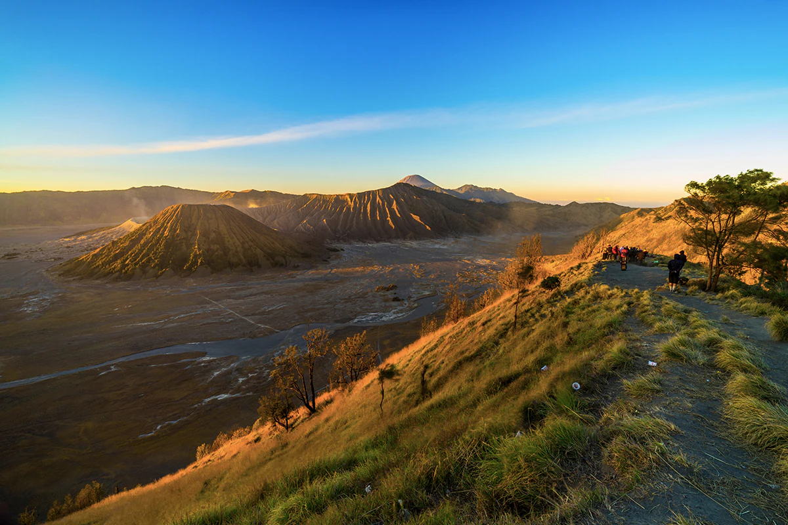
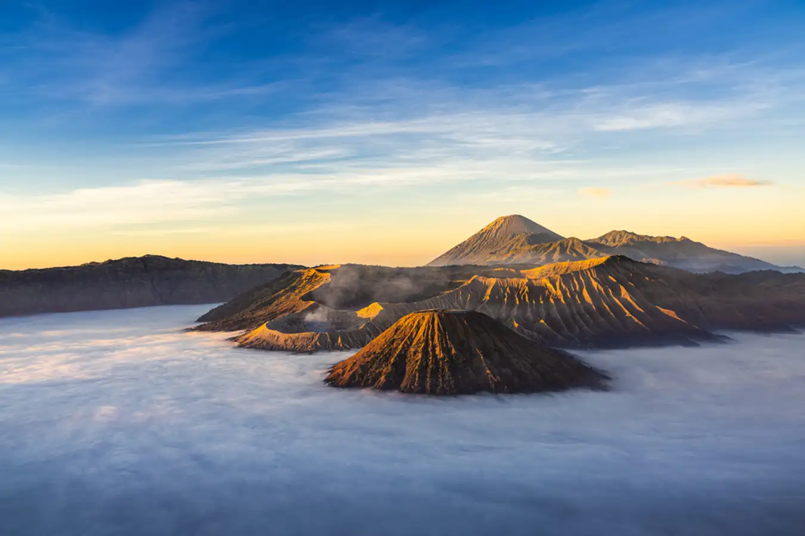
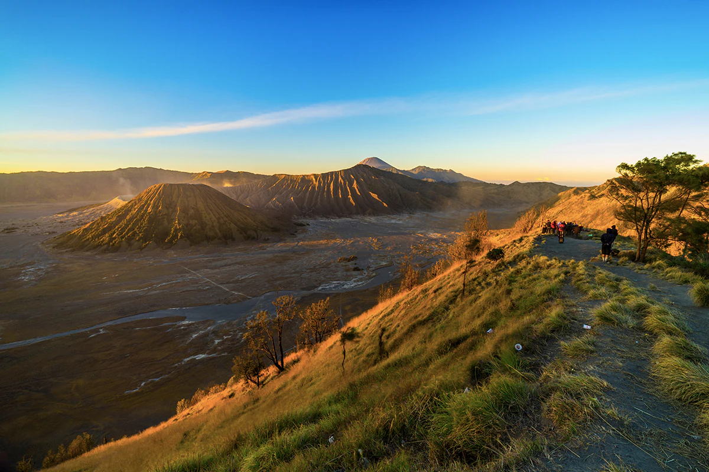
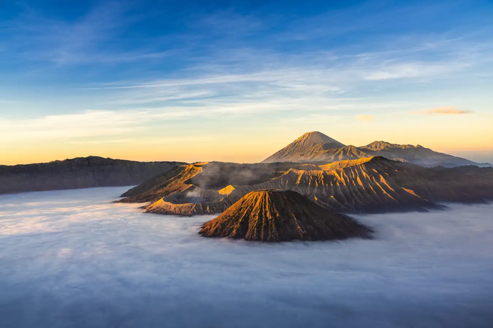

Gunung Bromo terpilih sebagai destinasi wisata terbaik tahun 2021 oleh majalah wisata terkenal. Gunung yang berada di Kabupaten Probolinggo, Jawa Timur, ini memiliki keindahan alam yang memukau dan menjadi daya tarik bagi para wisatawan.
Keindahan Gunung Bromo
Gunung Bromo terkenal dengan pemandangan sunrise yang indah di atas kabut yang menutupi lautan pasir. Selain itu, wisatawan juga dapat menikmati keindahan kawah yang aktif dan terus mengeluarkan asap dari dalamnya.
Rekomendasi Aktivitas di Gunung Bromo
- Berkuda di sekitar kaki gunung
- Menikmati pemandangan sunrise dari puncak gunung
- Menikmati keindahan kawah Bromo
- Berpiknik di sekitar lautan pasir
"Gunung Bromo adalah salah satu tempat terindah di Indonesia. Saya sangat merekomendasikan untuk mengunjunginya."
Data Geospasial Gunung Bromo
Berikut adalah data geospasial Gunung Bromo dalam bentuk tabel:
| Parameter | Nilai |
|---|---|
| Ketinggian | 2.329 ma above msl |
| Luas Area | 50.276,3 Ha |
| Koordinat Geografis | 8° 0' 26" LS, 112° 57' 57" BT |
| Zona UTM | UTM-49S |
Foto-Foto Gunung Bromo
 


